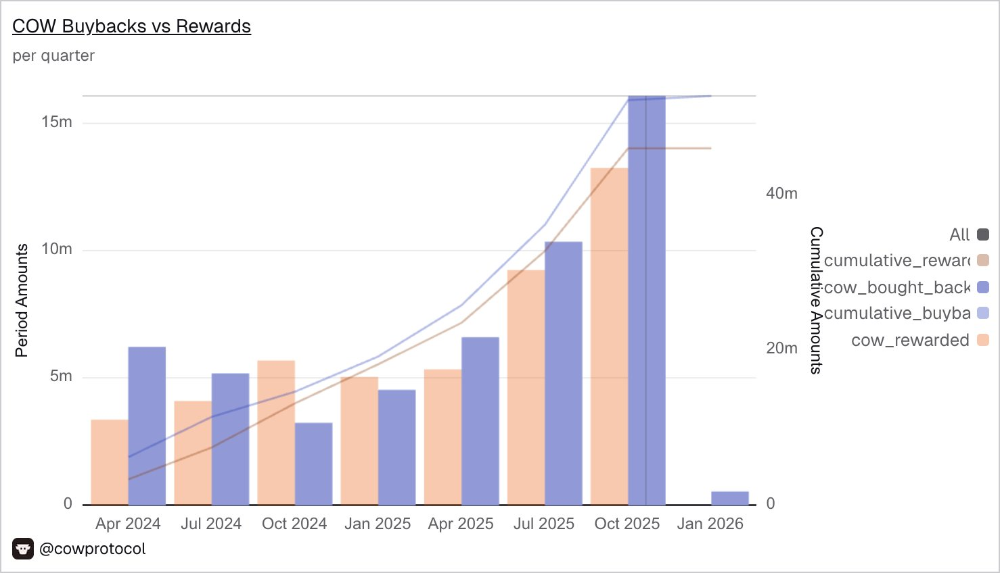

Net Buybacks Matter
CoWSwap's tokenomics, and why net buybacks matter more in token buyback discussions
On the topic of token buybacks, I think the idea of “net buyback” is quite underrated
Take CowSwap, at first glance they seemed to have bought back ~$3.5M worth of $COW in 25Q4, but looking into their unit eco:

They are paying ~45-55% COGS to solvers in the form of $COW tokens, afterwards they’d buy back pretty much all of it through TWAP plus a premium portion (targeting at 20% to the emission), and this is the $3.5M we are referring to.
So essentially the bulk of the buyback was used to offset its COGS.
By doing simple math, the net buyback is ~10% of the revenue.
This is before even considering vesting schedules or other tokenomics nuances—just purely the business nature of it.
In reality, emissions are often quite brutal, and there are many nuances in between (in $COW’s case for example, solvers don’t and can’t sell 100% of their rewards).
But I think we should apply the same principle to most tokens, including $JUP and $AAVE, i.e. considering the net buyback/profit shared to token holders to have the most accurate view.